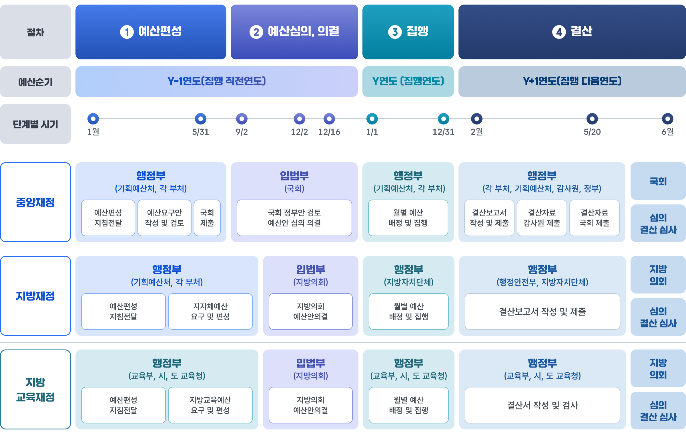
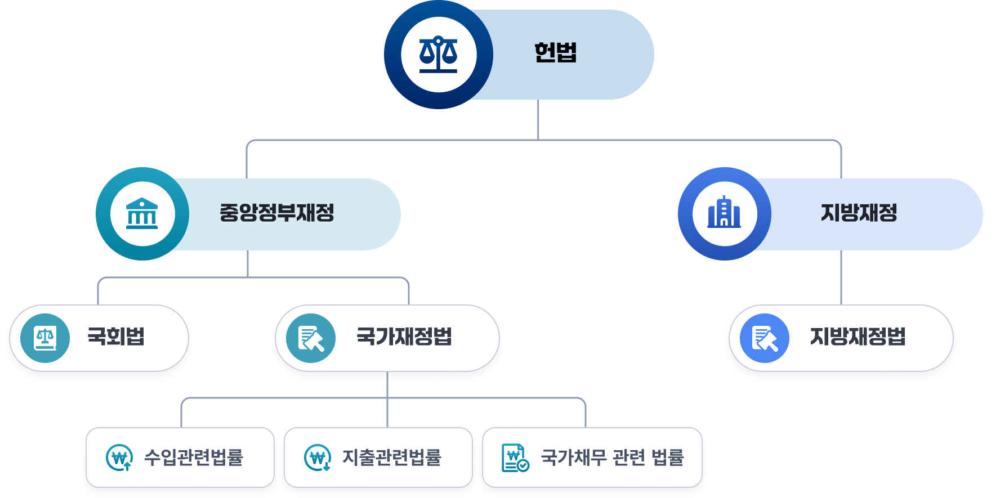

예산・결산・운용절차
1. 운용절차의 개념
재정운용절차는 정부가 재정을 마련하고 사용한 뒤 그 결과를 점검하는 일련의 과정으로, 예산을 짜고, 의회의 승인을 받고, 집행한 뒤, 다시 결산으로 확인하는 순환 구조입니다. 크게 1)예산과정 2)집행과정 3)결산과정으로 구성되며 이 절차를 통해 재정이 계획대로 쓰였는지, 법과 원칙에 맞게 운영되었는지를 단계적으로 확인하게 됩니다.
- 예산과정은 먼저 정부가 다음 해에 필요한 세입과 세출을 미리 계산하여 예산안을 편성하는 단계로 시작됩니다. 이후 국회가 그 예산안을 심의하고 확정합니다.
- 집행과정은 정부가 확정된 예산에 따라 국가가 무엇에 얼마를 쓸지 정하고, 그 계획에 따라 재정을 운영하는 단계라고 보시면 됩니다.
- 결산과정은 한 해의 예산 집행이 끝난 후, 정부가 실제 수입과 지출 내역을 정리해 결산보고서를 작성하는 단계에서 시작됩니다. 그 다음 감사원이 이를 검사하여 집행의 적정성과 회계의 정확성을 확인하고, 마지막으로 국회가 결산을 심사하여 전체 재정운영이 적절했는지를 평가합니다. 즉, 결산과정은 이미 집행된 재정이 제대로 운영되었는지를 사후에 검증하는 절차입니다.

2. 운용절차 관련 법률
우리나라의 재정과정에 관한 법체계는 ｢대한민국헌법｣을 최상위 규범으로 하여 구성되어 있습니다.
헌법은 국가의 예산과 결산에 관한 기본 원칙을 정하고, 그 구체적인 절차와 운영은 이를 바탕으로 한 개별 법률들에 의해 규율되고 있습니다. 그중에서도 ｢국가재정법｣은 정부의 예산 편성, 집행, 기금 운용, 결산 등 국가재정 전반의 기본 틀을 정하는 중심 법률이며, ｢국회법｣은 국회의 예산안과 결산안 심의·의결 절차를 규율함으로써 재정운영에 대한 민주적 통제를 뒷받침하고 있습니다.
아울러 재정은 단순히 예산편성과 집행에만 그치지 않고 조세, 부담금, 기금, 보조금, 국가채무 등 다양한 영역과 긴밀하게 연결되어 있습니다. 이에 따라 우리나라에는 수입과 관련된 개별 법률, 지출과 관련된 개별 법률, 그리고 국가채무와 재정건전성에 관한 법률들이 폭넓게 마련되어 있습니다. 이러한 다층적이고 체계적인 법 구조는 재정이 투명하고 책임 있게 운영되도록 하는 동시에, 국가재정의 안정성과 지속가능성을 확보하는 기능을 수행하고 있습니다.
